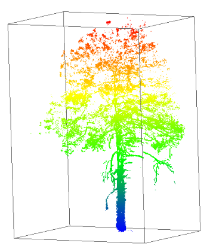

Resource Mapping with Drones¶
About the Course¶
Welcome! This is an introductory course on how to use small camera drones for aerial mapping of land and resources.
-
You will learn all the skills necessary to create precisely surveyed maps using photogrammetry methods.
-
We will cover all of the industries and applications where drone imagery maps are making big impacts on society.
-
Students will learn how to become licensed drones pilots with the Federal Aviation Administration (FAA).
Instructor Jeffrey Gillan, PhD
I am a researcher at the University of Arizona and have been involved with aerial mapping and drones since 2011. Ever since, I have been using small drones to map and survey rangelands, forests, river corridors, wetlands, agriculture fields, and golf courses. I love helping others learn to use these powerful tools.

Overview¶
Let's begin the coarse with this engaging brief video, which explores the use of drones for generating 2D and 3D photographic maps. Throughout this class, you will acquire the skills to execute these technique proficiently. The video provides an essential overview of photographic mapping through drone technology, while also shedding light on the myriad industries harnessing its potential.
Terminology¶
Let's get some terminology straight. There are a lot of different ways to refer to a remote control aircraft. I use the term drone most often because this has become the defacto term in society. Most people understand what you mean when you say drone.
There are a number of different acronyms used to refer to drones. Some differ depending on the industry, application, or context. But for the most part, the following acronyms are generally interchangeable.
Unmmaned Aircraft (UA)
This is an aircraft where the pilot is not onboard. It is piloted remotely, probably through radio signals.
Unmanned Aerial Vehicle (UAV)
This is the same thing as a UA
Unmanned Aerial System (UAS)
This term refers to the entire flying system, not just the aircraft itself. Other components of the system include the remote control, the pilot, GPS, IMU, cameras, etc.
Uncrewed Aerial System (UAS)
This is the gender neutral term for UAS
Small Unmanned Aerial System (sUAS)
This term refers to a specific weight class of UAV aircraft as designated by the FAA. To meet the definition of sUAS, aircraft need to weight less than 55 lbs on takeoff.
Remotely Piloted Aircraft (RPA)
This is just another term for a drone that does not seem to get much use nowadays.
Advantages of the Drone Perspective¶
Land and resources on the land (e.g., trees) can be observed and measured at various scales, from in-situ field measurements all the way to continental scale satellite imagery.

Each of the scales has a unique spatial resolution (pixel size) and geographic extent.
Field measurements can provide very detailed information on the land and resources, but usually across a small geographic extent. Conversely, satellite imagery can cover the globe but with coarser grain observations.
Drone imagery provides a unqiue scale that fits somewhere between field and airplane imagery.
-
Drone imagery is relatively easy and cheap to collect compared with airplane imagery
-
Drone imagery can cover much larger areas compared with field measurements
-
Drone imagery can observe and measure some vegetation and topographic characteristics better than field measurements. A great example is capturing the structure of a tree. This is very difficult to do with manual measurements.
-
Drones are highly portable and can be carried almost anywhere
-
Drone imagery is on-demand. As long as the weather is good, I can go out and collect imagery.
Limitations of Drones¶
-
Limited Geographic coverage: A single small drone can cover hundreds and perhaps up to a few thousand acres. To cover larger areas, you need an airplane or a satellite.
-
Limited Flight Endurance (battery limitations): Most multi-rotor drones can stay aloft for only 25-30 minutes.
-
Legal limitations including flying height above the ground, line-of-sight requirements, no operations over people.
-
Requires expertise to plan, collect, process, and analyze drone imagery maps
-
Cost: Drone equipment, processing software, and digital storage can all be expensive
Camera Drone Models¶
There are many companies globally making many different drone models. There is an enormous range of capabilities and price points. The following are some popular drone models worth checking out.


Select Drone Manufacturers
DJI
DJI, a China-based company, is the world leader in the production of consumer and professional drones for photographic mapping. They make the best equipment at the lowest prices. In 2013, DJI released the Phantom 1 multi-rotor drone which was one of the first consumer drones completely assembled and ready to fly.
Autel Robotics
Skydio
Wingtra
AgEagle
Consumer Drone History
The Parrot AR Drone (circa 2010)was considered the first ready-to-fly consumer multirotor drone. The DJI Phantom 1 made it's debut in 2013. This was followed up with the Phantom 2 Vision + (2014) which was one of the first drones to have an integrated camera. These early models kick- started the consumer drone industry.
Camera Drone Types¶
There are three basic drone types: Multi-rotors, Fixed-Wing, and VTOL Fixed-Wing. Each has advantages and disadvantages that should be considered before buying or acquiring. The following section lists some of the characteristics of each type.

-
Usually Less Expensive to Buy
-
Vertical Launch and Landing
-
Shorter Flight Endurance
-
Able to Map Smaller Areas
-
Very Precise Flying
-
Precise Control of Gimbal Angle

-
Relatively Expensive
-
Throw Launch
-
Belly Crash Landing
-
Longer Flight Endurance
-
Able to map very large areas
-
Less Precise Flying
-
Less Control of Camera Angle (via gimbal)
This video shows a Bat4 fixed-wing drone taking off from a runway in 2012. Thankfully, most fixed-wing drones are now smaller and can be launched by a single person.

- All the advantages of the fixed-wing with the ability of vertical take-off and landing.
Unmanned Aircraft System¶

The 'system' refers to the all of the additional components on and around the aircraft. There are a lot of interacting technologies that make drone mapping possible.
-
At the center of system is you the operator.
-
You will have a remote control and some kind of screen (e.g., Ipad) to communicate with the aircraft.
-
The aircraft will have a camara or sensor, an SD card to record the images, flight batteries, a global navigation satellite sensor (GNSS) and intertial measurement unit (IMU).
-
The GNSS is receiving signals from satellites orbiting the Earth to help the drone navigate autonomously.
-
Additionally, the drone and the remote control may be connected (via radio) to a base station to improve the positioning of the aircraft.
-
The remote control may also be connnected to cellular towers in order to get a basemap in your mapping application.
This may seem a bit complex at first, but don't worry, we'll explain every component throughout this course.
Drone Sensors¶
The focus of this class is making photographic maps from drones, so the camera or sensor is at the center of everything we do. Drones are flying cameras! Many types of cameras are mountable on drones. We will cover the most common.
RGB¶
The most common is a red, green, blue (RGB) camera, which is the regular color camera that we all have used. Drones often come with an RGB camera integrated directly into the aircraft. That makes them very easy to use. Some more fancy drones allow you to swap out different camera types.
Multi-Spectral¶
Multi-spectral cameras are very popular for drone mapping. Multi-spectral means that they collect specific wavelenghts of light including visible and near-infrared. One of the main applications for multi-spectral mapping is observing the health of vegetation in an agricultural or natural resource context.

Thermal¶
Drone-mounted thermal infrared cameras are used to detect temperature or heat signatures across a landscape. This technology could be used to detect live animals or identify the temperature differences between different land features. For example, thermal imagery is very useful for decting surface water.
LiDAR (Light detection and ranging)¶
LiDAR is a 3D mapping sensor that sends out pulses of light (usually in the near-infrared range) that reflect off the ground and return to the sensor. The return time is converted to distance and when done millions of times, can provide precise 3D maps of the landscape. The typical imagery products created from laser scanning are called point clouds.

Hyperspectral¶
Hyperspectral imagery expands the concept of multi-spectral imagery. While multi-spectral imagery typical has 5 or 6 bands sensitive to specific regions of the electromagnetic, hyperspectral sensors can have hundreds or thousands of bands. Rich reflectance data provided by hyperspectral sensors can provide insights into plant physiology, mineralogy, and soil types.
Companies like Headwall are manufacturing hyperspectral sensors that can be mounted on drones.

Camera Mounting¶
Gimbal¶
Many integrated drone cameras will come mounted on a gimbal. A gimbal is a device used to stabilize and control the movement of a camera. It typically consists of motorized axes that work together to keep the camera level and steady. Most gimbals have a range of tilt that can be controlled from the remote control.

Shock Mount¶
Shock mounting is mounting the camera in a way that reduces the impact of vibrations or movement on the camera. It is not motorized nor can the user change the camera angle remotely.